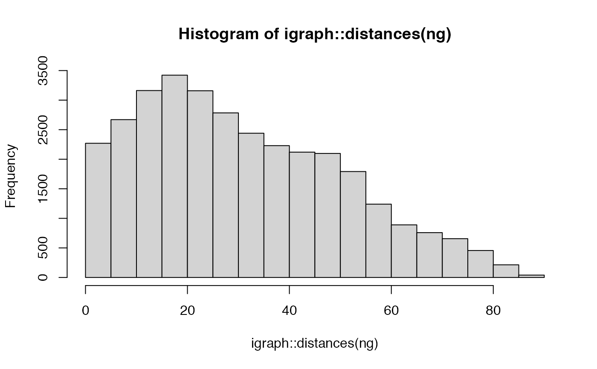
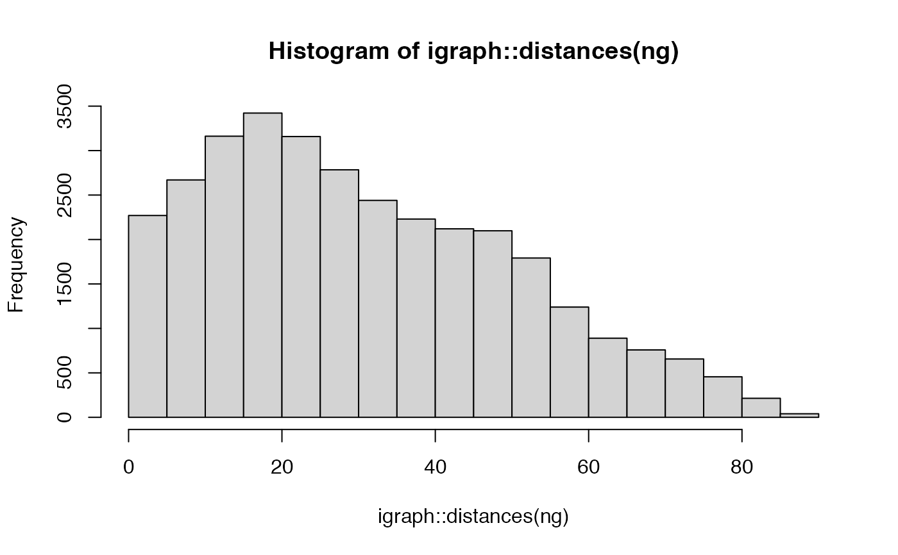
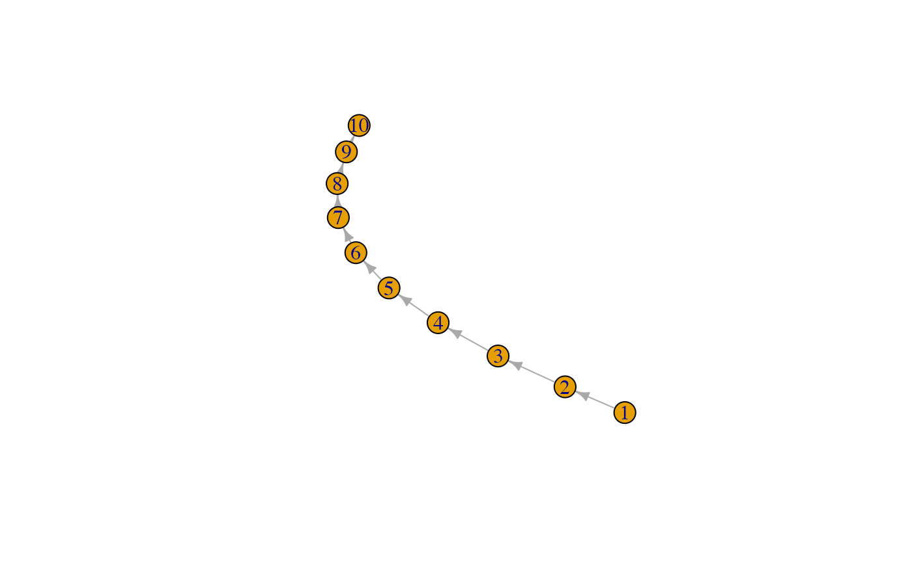
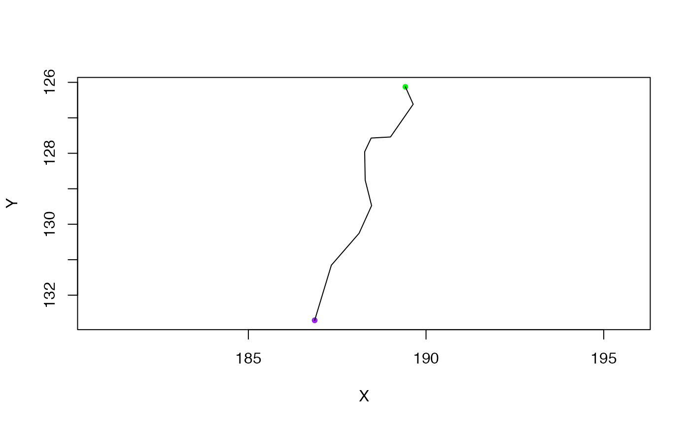
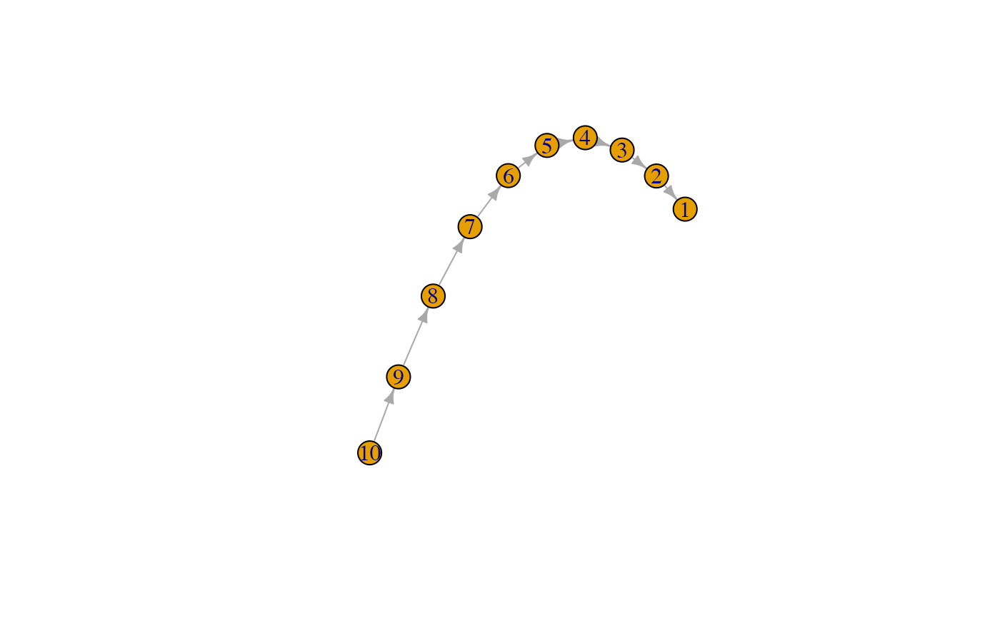
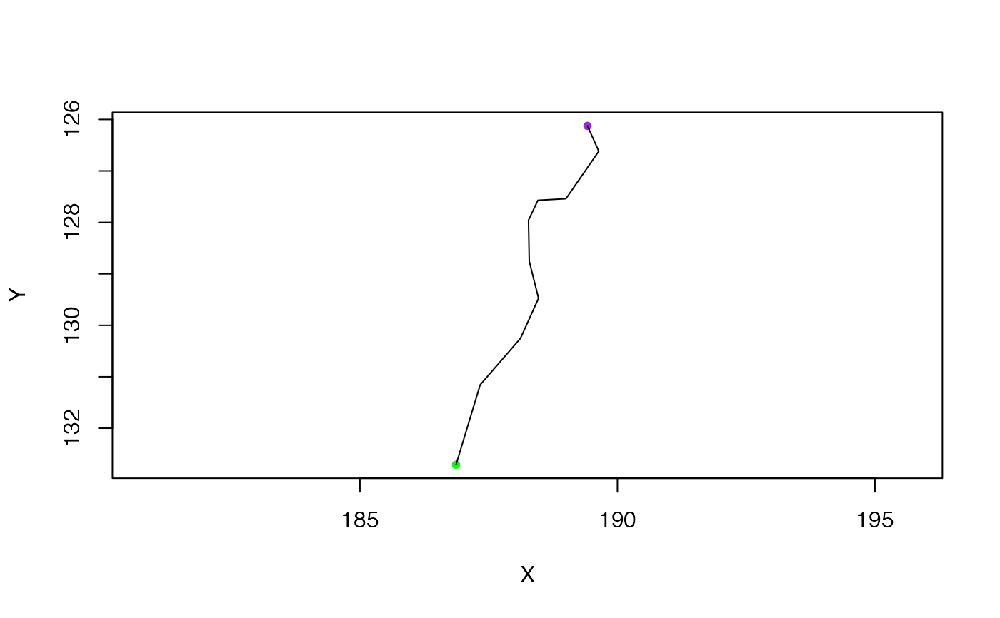
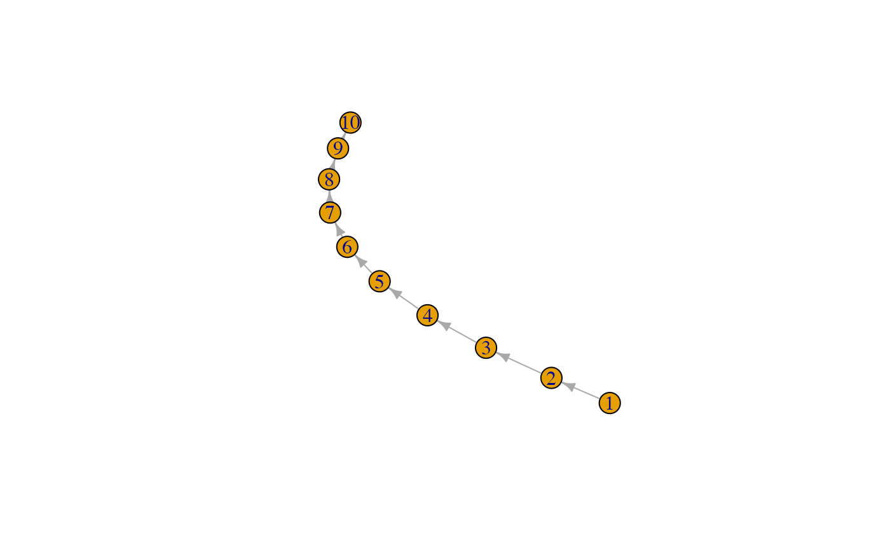
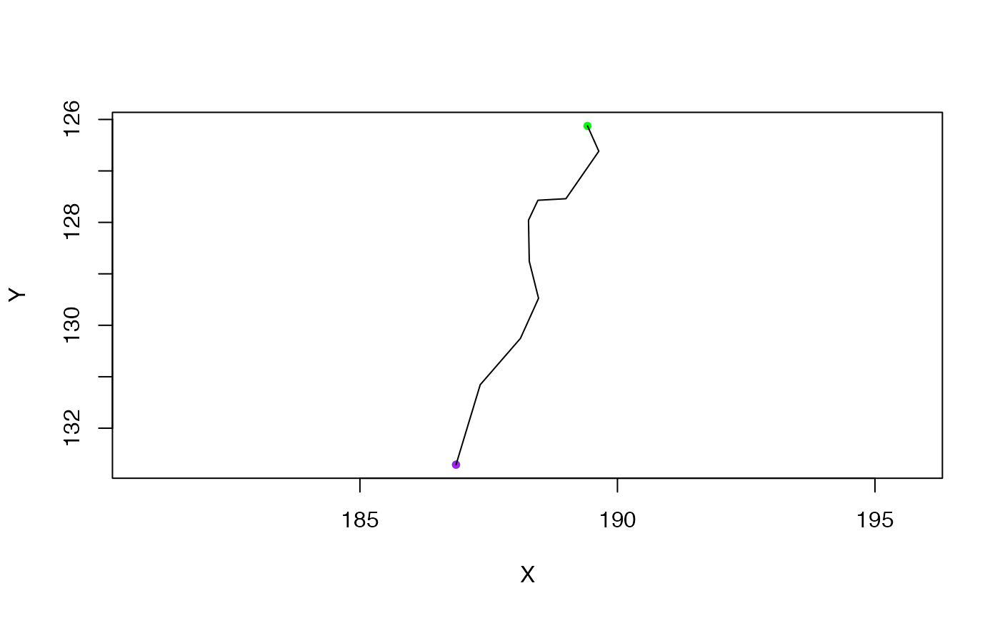
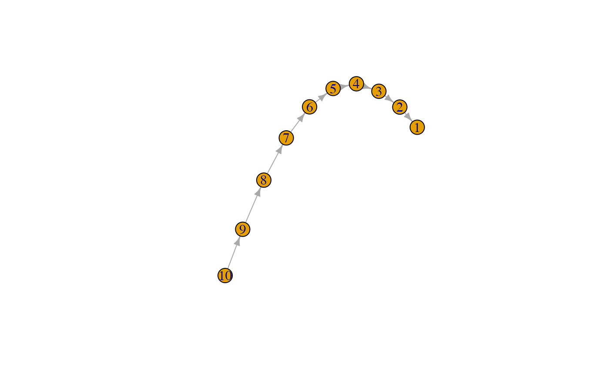
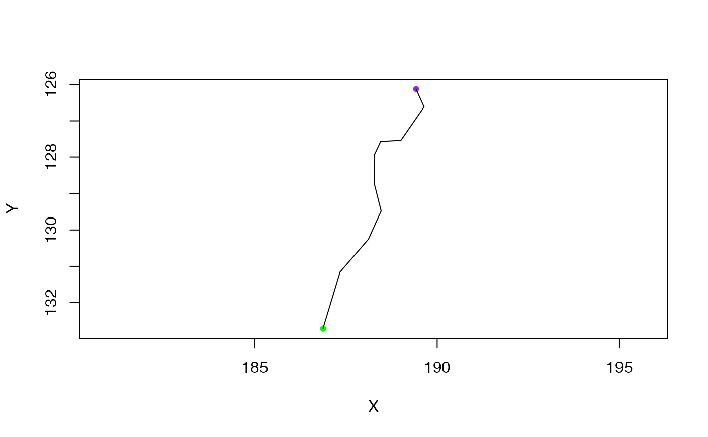

neuron makes a neuron object from appropriate variables.
is.neuron will check if an object looks like a neuron.
as.neuron will convert a suitable object to a neuron
as.neuron.data.frame expects a block of SWC format data
as.neuron.ngraph converts a graph (typically an
ngraph object) to a neuron
as.neuron.igraph will convert an ngraph compatible
igraph object into a neuron.
as.neuron.default will add class "neuron" to a neuron-like
object.
neuron(
d,
NumPoints = nrow(d),
StartPoint,
BranchPoints = integer(),
EndPoints,
SegList,
SubTrees = NULL,
InputFileName = NULL,
NeuronName = NULL,
...,
MD5 = TRUE
)
is.neuron(x, Strict = FALSE)
as.neuron(x, ...)
# S3 method for data.frame
as.neuron(x, ...)
# S3 method for ngraph
as.neuron(x, vertexData = NULL, origin = NULL, Verbose = FALSE, ...)
# S3 method for igraph
as.neuron(x, ...)
# S3 method for default
as.neuron(x, ...)Arguments
- d
matrix of vertices and associated data in SWC format
- NumPoints
Number of points in master subtree
- StartPoint, BranchPoints, EndPoints
Nodes of the neuron
- SegList
List where each element contains the vertex indices for a single segments of the neuron, starting at root.
- SubTrees
List of SegLists where a neuron has multiple unconnected trees (e.g. because the soma is not part of the graph, or because the neuronal arbour has been cut.)
- InputFileName
Character vector with path to input file
- NeuronName
Character vector containing name of neuron or a function with one argument (the full path) which returns the name. The default (
NULL) sets NeuronName to the file name without the file extension.- ...
Additional fields to be included in neuron. Note that if these include CreatedAt, NodeName, InputFileStat or InputFileMD5, they will override fields of that name that are calculated automatically.
- MD5
Logical indicating whether to calculate MD5 hash of input
- x
A neuron or other object to test/convert
- Strict
Whether to check class of neuron or use a more relaxed definition based on object being a list with a SegList component.
- vertexData
A dataframe with SWC fields especially X,Y,Z,W,PointNo, Parent.
- origin
Root vertex, matched against names (aka PointNo) when available (see details)
- Verbose
Whether to be verbose (default: FALSE)
Value
A list with elements: (NumPoints,StartPoint,BranchPoints,EndPoints,nTrees,NumSegs,SegList, [SubTrees]) NB SubTrees will only be present when nTrees>1.
Details
neuron objects consist of a list containing multiple fields describing the 3D location and connectivity of points in a traced neuron. The critical fields of a neuron, n, are n$d which contains a dataframe in SWC format and n$SegList which contains a representation of the neuron's topology used for most internal calculations. For historical reasons, n$SegList is limited to a single fully-connected tree. If the tree contains multiple unconnected subtrees, then these are stored in n$SubTrees and nTrees will be >1; the "master" subtree (typically the one with the most points) will then be stored in n$SegList and n$NumPoints will refer to the number of points in that subtree, not the whole neuron.
StartPoint, BranchPoints, EndPoints are indices matching the rows of
the vertices in d not arbitrary point numbers typically
encoded in d$PointNo.
Columns will be ordered c('PointNo','Label','X','Y','Z','W','Parent')
Uses a depth first search on the tree to reorder using the given origin.
When the graph contains multiple subgraphs, only one will be chosen as the master tree and used to construct the SegList of the resultant neuron. However all subgraphs will be listed in the SubTrees element of the neuron and nTrees will be set appropriately.
When the graph vertices have a label attribute derived from PointNo, the origin is assumed to be specified with respect to the vertex labels rather than the raw vertex ids.
See also
graph.dfs, as.seglist
Other neuron:
ngraph(),
plot.dotprops(),
potential_synapses(),
prune(),
resample(),
rootpoints(),
spine(),
subset.neuron()
Examples
## See help for functions listed in See Also for more detailed examples
## Basic properties
# a sample neuron
n = Cell07PNs[[1]]
# summarise it
n
#> 'neuron' with 180 vertices in 1 tree
# inspect its internal structure
str(n)
#> List of 24
#> $ CellType : chr "DA1"
#> $ NeuronName : chr "EBH11R"
#> $ InputFileName: 'AsIs' chr "/GD/projects/PN2/TransformedTraces/DA1/EBH11R.tasc"
#> $ CreatedAt : POSIXt[1:1], format: "2006-01-17 15:21:14"
#> $ NodeName : Named chr "jefferis.joh.cam.ac.uk"
#> ..- attr(*, "names")= chr "nodename"
#> $ InputFileStat:'data.frame': 1 obs. of 10 variables:
#> ..$ size : num 15379
#> ..$ isdir : logi FALSE
#> ..$ mode : 'octmode' int 644
#> ..$ mtime : POSIXt[1:1], format: "2006-01-12 00:52:01"
#> ..$ ctime : POSIXt[1:1], format: "2006-01-12 00:52:01"
#> ..$ atime : POSIXt[1:1], format: "2006-01-17 15:21:14"
#> ..$ uid : int 501
#> ..$ gid : int 501
#> ..$ uname : chr "jefferis"
#> ..$ grname: chr "jefferis"
#> $ InputFileMD5 : Named chr "fcacee3f874cbe2c6ad96214e6fee337"
#> ..- attr(*, "names")= 'AsIs' chr "/GD/projects/PN2/TransformedTraces/DA1/EBH11R.tasc"
#> $ NumPoints : int 180
#> $ StartPoint : num 1
#> $ BranchPoints : num [1:16] 34 48 51 75 78 95 98 99 108 109 ...
#> $ EndPoints : num [1:18] 1 42 59 62 80 85 96 100 102 112 ...
#> $ NumSegs : int 33
#> $ SegList :List of 33
#> ..$ : int [1:34] 1 2 3 4 5 6 7 8 9 10 ...
#> ..$ : int [1:9] 34 35 36 37 38 39 40 41 42
#> ..$ : num [1:7] 34 43 44 45 46 47 48
#> ..$ : int [1:4] 48 49 50 51
#> ..$ : int [1:9] 51 52 53 54 55 56 57 58 59
#> ..$ : num [1:4] 51 60 61 62
#> ..$ : num [1:14] 48 63 64 65 66 67 68 69 70 71 ...
#> ..$ : int [1:4] 75 76 77 78
#> ..$ : int [1:3] 78 79 80
#> ..$ : num [1:6] 78 81 82 83 84 85
#> ..$ : num [1:11] 75 86 87 88 89 90 91 92 93 94 ...
#> ..$ : int [1:2] 95 96
#> ..$ : num [1:3] 95 97 98
#> ..$ : int [1:2] 98 99
#> ..$ : int [1:2] 99 100
#> ..$ : num [1:3] 99 101 102
#> ..$ : num [1:7] 98 103 104 105 106 107 108
#> ..$ : int [1:2] 108 109
#> ..$ : int [1:4] 109 110 111 112
#> ..$ : num [1:4] 109 113 114 115
#> ..$ : int [1:3] 115 116 117
#> ..$ : num [1:3] 115 118 119
#> ..$ : int [1:3] 119 120 121
#> ..$ : num [1:14] 119 122 123 124 125 126 127 128 129 130 ...
#> ..$ : num [1:2] 108 135
#> ..$ : int [1:9] 135 136 137 138 139 140 141 142 143
#> ..$ : int [1:6] 143 144 145 146 147 148
#> ..$ : num [1:7] 143 149 150 151 152 153 154
#> ..$ : num [1:7] 135 155 156 157 158 159 160
#> ..$ : int [1:6] 160 161 162 163 164 165
#> ..$ : num [1:5] 160 166 167 168 169
#> ..$ : int [1:4] 169 170 171 172
#> ..$ : num [1:9] 169 173 174 175 176 177 178 179 180
#> $ d :'data.frame': 180 obs. of 7 variables:
#> ..$ PointNo: int [1:180] 1 2 3 4 5 6 7 8 9 10 ...
#> ..$ Label : num [1:180] 2 2 2 2 2 2 2 2 2 2 ...
#> ..$ X : num [1:180] 187 187 188 188 188 ...
#> ..$ Y : num [1:180] 133 131 130 129 129 ...
#> ..$ Z : num [1:180] 88.2 90.6 93.1 95 97.5 ...
#> ..$ W : num [1:180] 1.01 1.27 1.14 1.27 1.27 1.27 1.27 1.27 1.27 1.27 ...
#> ..$ Parent : num [1:180] -1 1 2 3 4 5 6 7 8 9 ...
#> $ OrientInfo :List of 5
#> ..$ AxonOriented: logi TRUE
#> ..$ AVMPoint : logi NA
#> ..$ AVLPoint : logi NA
#> ..$ Scl : num [1:3] 1 1 1
#> ..$ NewAxes : num [1:3] 1 2 3
#> $ SegOrders : num [1:33] 1 2 2 3 4 4 3 4 5 5 ...
#> $ MBPoints : int [1:2] 34 48
#> $ LHBranchPoint: int 75
#> $ SegTypes : num [1:33] 1 3 1 3 3 3 1 2 2 2 ...
#> $ AxonSegNos :List of 3
#> ..$ PreMBAxons : int 1
#> ..$ MBAxons : int 3
#> ..$ PostMBAxons: int 7
#> $ LHSegNos : num [1:26] 8 9 10 11 12 13 14 15 16 17 ...
#> $ MBSegNos :List of 2
#> ..$ : int 2
#> ..$ : num [1:3] 4 5 6
#> $ NumMBBranches: num 2
#> $ AxonLHEP : num 72
#> - attr(*, "class")= chr [1:2] "neuron" "list"
# summary of 3D points
summary(xyzmatrix(n))
#> X Y Z
#> Min. :186.9 Min. : 90.36 Min. : 88.2
#> 1st Qu.:225.6 1st Qu.: 97.56 1st Qu.:103.4
#> Median :258.4 Median :102.70 Median :112.9
#> Mean :249.4 Mean :104.03 Mean :120.9
#> 3rd Qu.:277.7 3rd Qu.:109.04 3rd Qu.:139.0
#> Max. :289.5 Max. :132.71 Max. :157.3
# identify 3d location of endpoints
xyzmatrix(n)[endpoints(n),]
#> X Y Z
#> 1 186.8660 132.70932 88.20393
#> 42 224.7067 109.86362 153.58749
#> 59 229.6343 92.30637 157.29700
#> 62 226.8855 90.36325 147.59602
#> 80 249.8864 93.59079 136.77795
#> 85 253.0099 90.94904 137.34921
#> 96 264.0801 98.53390 121.89463
#> 100 266.3223 98.73241 116.46558
#> 102 267.5460 98.59859 112.85608
#> 112 271.0762 102.67288 100.84955
#> 117 274.6128 100.92061 103.28772
#> 121 277.3920 102.19148 102.69473
#> 134 287.1214 101.43365 103.30740
#> 148 281.7958 96.63987 101.08075
#> 154 276.6551 95.09809 99.22113
#> 165 278.3287 113.75627 104.87700
#> 172 282.3069 111.93213 105.65492
#> 180 289.5364 111.96014 109.18281
## Other methods
# plot
plot(n)
 # all methods for neuron objects
methods(class = 'neuron')
#> [1] Ops all.equal as.neuron as.ngraph
#> [5] as.seglist branchpoints dotprops endpoints
#> [9] intersect_plane ndigest nvertices plot
#> [13] plot3d potential_synapses print prune
#> [17] prune_in_volume prune_online prune_twigs reroot
#> [21] resample rootpoints scale sholl_analysis
#> [25] subset summary write.vtk xform
#> [29] xyzmatrix xyzmatrix<-
#> see '?methods' for accessing help and source code
## Neurons as graphs
# convert to graph and find longest paths by number of nodes
ng=as.ngraph(n)
hist(igraph::distances(ng))

# ... or in distances microns
ngw=as.ngraph(n, weights=TRUE)
hist(igraph::distances(ngw))
# all methods for neuron objects
methods(class = 'neuron')
#> [1] Ops all.equal as.neuron as.ngraph
#> [5] as.seglist branchpoints dotprops endpoints
#> [9] intersect_plane ndigest nvertices plot
#> [13] plot3d potential_synapses print prune
#> [17] prune_in_volume prune_online prune_twigs reroot
#> [21] resample rootpoints scale sholl_analysis
#> [25] subset summary write.vtk xform
#> [29] xyzmatrix xyzmatrix<-
#> see '?methods' for accessing help and source code
## Neurons as graphs
# convert to graph and find longest paths by number of nodes
ng=as.ngraph(n)
hist(igraph::distances(ng))

# ... or in distances microns
ngw=as.ngraph(n, weights=TRUE)
hist(igraph::distances(ngw))
 # converting back and forth between neurons and graphs
g=as.ngraph(Cell07PNs[[1]])
gstem=igraph::induced.subgraph(g, 1:10)
# this is fine
plot(gstem)

plot(as.neuron(gstem))

# but if you had an undirected graph
ug=igraph::as.undirected(gstem)
# you get a warning because there is no explicit origin for the graph
as.neuron(ug)
#> Warning: No valid origin found! Using first endpoint as origin
#> 'neuron' with 10 vertices in 1 tree
# If you need finer control of the conversion process
gstem2=as.ngraph(ug, root = 10)
plot(gstem2)

plot(as.neuron(gstem2))

# converting back and forth between neurons and graphs
g=as.ngraph(Cell07PNs[[1]])
gstem=igraph::induced.subgraph(g, 1:10)
# this is fine
plot(gstem)

plot(as.neuron(gstem))

# but if you had an undirected graph
ug=igraph::as.undirected(gstem)
# you get a warning because there is no explicit origin for the graph
as.neuron(ug)
#> Warning: No valid origin found! Using first endpoint as origin
#> 'neuron' with 10 vertices in 1 tree
# If you need finer control of the conversion process
gstem2=as.ngraph(ug, root = 10)
plot(gstem2)

plot(as.neuron(gstem2))
